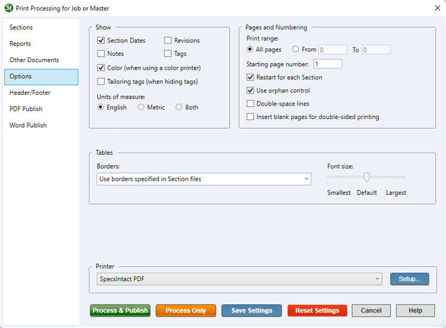

This command can also be executed from the SpecsIntact Explorer's Toolbar, Right-click menu, or by using the keyboard shortcut Ctrl+P.
The Options tab provides a range of options for personalizing the output precisely to your project needs. The options that are automatically selected by default are displayed below.
 The available and default print processing options in SpecsIntact differ between Jobs and Masters, reflecting their distinct purposes and requirements.
The available and default print processing options in SpecsIntact differ between Jobs and Masters, reflecting their distinct purposes and requirements.
 Click the tabbed commands on the image below to see how to use each function.
Click the tabbed commands on the image below to see how to use each function.

- Show - Provides check boxes for the elements you want visible within the generated output files, including hard copies, Processed Files, PDF Files, or Word Files.
- Section Dates - Displays the date the Section was created or last revised due to extensive or significant modifications. The Section date may also include a change number and date (e.g., CHG: #: MM/YY). To learn more about factors that influence Section date changes, refer to the UFGS Changes/Revisions policy.
- Revisions - Displays revisions (e.g., additions and deletions) made while editing in the SI Editor.
- Notes - Displays the specifier notes in the generated output files.
- Tags - Displays all tags in the generated output files.
- Color (when using a color printer) - Displays colored content in the generated output files.
- Tailoring tags (when hiding tags) - Displays only Tailoring tags in the generated output files.
- Units of Measure - Displays the project's configured unit of measure (e.g., English, Metric, or Both) for the Job. Masters default to displaying both English and Metric units. This setting is determined by the global Use this setting when printing option, accessible in the File menu > Properties > Options tab.
- Pages and Numbering - Provides precise control over the Print range, Starting page number, to include options to Restart for each Section, Use orphan control, print with Double-space lines, or Insert blank pages for double-sided printing of pages you want to print in the generated output files, including hard copies, Processed Files, PDF Files, or Word Files.
- Print Range - Provides the option to specify which pages are included in the generated output files. By default, this setting is set to All Pages.
- Starting page number - Provides the option to specify the page number by assigning the initial page number for each Section. This function is commonly used when you are using a Cover Page and want it to be Page 1, this option allows you to set the first page of your Section to start at Page 2 (or any other number). This way, your Cover Page is correctly numbered without disrupting the natural flow of your Section's page sequence.
- Restart for each Section - Provides the option to control whether the pages will be numbered sequentially within each Section. If this option is not checked, all Sections will be numbered as one document.
- Use orphan control - Provides the option to prevent a Title (TTL), Reference Organization (ORG), or a Formatted Table Header from appearing as the last, solitary line on a page. This ensures these elements always print with the accompanying content, improving readability.
- Double-space lines - Provides the option to generate hard copy output files with ample vertical spacing between lines. This format is ideal for review cycles, allowing editors and proofreaders plenty of room to write notes, mark up content, and suggest changes, while significantly enhancing overall readability.
- Insert blank pages for double-sided printing - Provides the option to insert a blank page with 'THIS PAGE INTENTIONALLY LEFT BLANK' centered on the page when either the Project Table of Contents, Section Table of Contents, or Section(s) ends on an odd page. This feature is specifically designed to ensure proper duplex (double-sided) printing for hard copies and PDF files only, allowing subsequent content to consistently start on an even page. Always check your output for unwanted blank pages. These can sometimes appear if a special control character forces content onto a new page. If you find any unwanted blank pages, you can manually remove them from the PDF file using third-party editing software like Adobe Acrobat, FoxIt, or Bluebeam.
- Tables - Provides more flexibility over table borders and font sizes when printing.
- Borders - Provides more flexibility to standardize the appearance of all tables by ensuring a uniform look for all table borders within the generated output files.
- Use borders specified in Section files - Displays the borders exactly as defined within each Section file. This is the default setting for table border display.
- Use no borders - Provides the option to hide all table borders throughout the generated output files. This creates a clean, borderless presentation for all tabular data, allowing the content itself to stand out without visual lines.
- Use thin borders for all tables - Displays a consistent thin border to every table, ensuring that every table will feature a uniform thin border.
- Font size - Provides more control over how large or small text appears within tables when printing. Use the provided slider to adjust the font size, ensuring optimal readability in your generated output files.
- Borders - Provides more flexibility to standardize the appearance of all tables by ensuring a uniform look for all table borders within the generated output files.
Process and Print/Publish common controls
The common controls for Process and Print/Publish appear consistently across all tabs, providing a unified experience.
- Printer - Provides the option to select a different printer while displaying the printer details. The last selected printer becomes the application's default printer.
- Setup button - Opens the Print Setup window, making it simple to choose your preferred printer, define the paper Size,Source, and Orientation, and even access networked printers. The Properties button allows you to change options based on the selected printer, such as the number of copies to be printed and to enable duplex or color printing, etc.
- Process & Publish / Process & Print button - Processes the Sections and applies the selections made on each tab, then sends a copy to the selected printer (e.g., hard copy or PDF).
- Process Only button - Processes the Sections, applies your selections, and saves the results to the project's Processed Files folder for your review.
- Save Settings button - Saves selections made on each tab, except for Sections chosen for processing and printing. The next time the Print Processing window is opened, the saved selections will automatically be the new defaults (e.g., Reports, Options, Header/Footer, etc.). When saving settings that are used frequently, make those specific selections first, click the Save Settings button, and then make the additional selections you need but do not want to save as permanent defaults.
- Reset Settings button - Restores any custom selections on the tabs back to the default settings.
Standard Windows Commands
 The Cancel button will close the window without recording any selections or changes entered.
The Cancel button will close the window without recording any selections or changes entered.
 The Help button will open the Help Topic for this window.
The Help button will open the Help Topic for this window.
Additional Learning Tools
 Watch all of the eLearning modules within Chapter 4 - Process and Print/Publish and Chapter 6 - Correcting QA Report Errors and Discrepancies.
Watch all of the eLearning modules within Chapter 4 - Process and Print/Publish and Chapter 6 - Correcting QA Report Errors and Discrepancies.